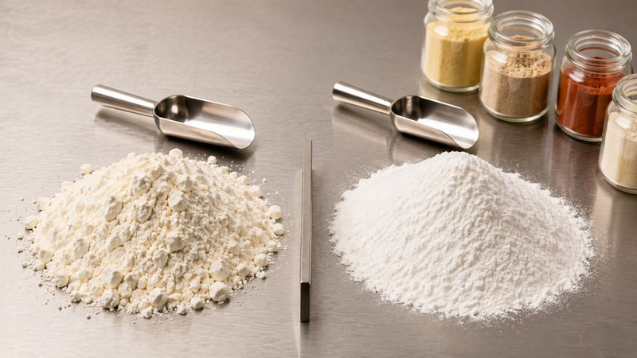
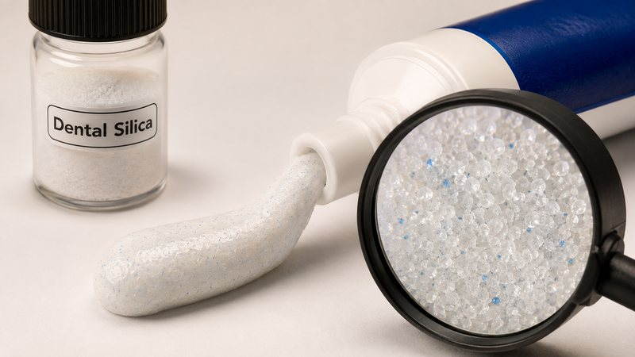
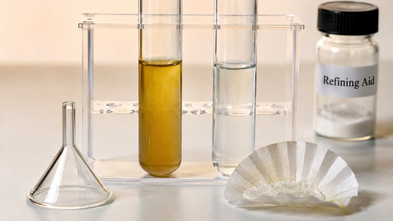

Build authority with application articles
We turn technology into scenario solutions. These articles are written for formulators and process engineers — and help search engines and AI understand our application capability.
 Feed additives
Feed additives
How to convert liquid additives into a free-flowing premix powder without silo caking
How absorption and surface area let liquid additives convert to powder stably, and the physics behind anti-caking.
Read article →
Food powdersWhy does the same anti-caking silica work in one seasoning blend and fail in another?
Why the same anti-caking silica performs differently in discharge and dosing at different particle sizes and surface areas.
Read article →
Oral careHow to balance RDA and thickening in toothpaste when abrasive and thickener silica are selected together
The trade-offs between RDA, thickening and paste stability, and why parallel dual-route testing matters.
Read article → Agrochemical
Agrochemical
How to select an inert silica carrier for WP, WG and SC formulations without losing disintegration
Different demands on the inert carrier across three dosage forms, plus anti-caking and sedimentation control.
Read article →
Oil refiningHow to bring residual phosphorus below 5 ppm without increasing bleaching earth consumption
Why a combined approach beats single-price comparison for refining effect and overall cost.
Read article → Industrial fluoride removal
Industrial fluoride removal
How to bring industrial fluoride below the discharge limit after precipitation has done its part
Where adsorption fits after precipitation, what governs breakthrough capacity, and how the route compares with activated alumina, resin and membranes.
Read article →